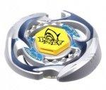

Pisces D125BS
| Pisces D125BS | |
|  | |
| Number: | BB-25 |
|---|---|
| System: | Metal System |
| Type: | Stamina |
Contents
Note: Pisces D125BS was originally the prize Beyblade of Random Booster Vol.2 Legend Pisces. It has since been released as a Booster by Takara Tomy, and is also available in the 4 Layer Special Edition Set, released in Hong Kong.
Face: Pisces
The Face on this Beyblade depicts Pisces, the twelfth astrological sign in the Zodiac. Its Zodiac symbol is the Fish.
Wheel: Pisces
- Weight: 35.4 grams
Pisces features two shark heads aligned in the clockwise direction, which gradually become thinner towards the tails. The shark motif is extended to the topside of the Wheel, where a row of shark teeth are positioned next to the entry points for the Launcher prongs. The heads of the sharks are pointed at the end, although the contact points are not exposed prominently enough to provide any significant Smash Attack. The rest of the Wheel is relatively round and smooth, affording it Stamina properties. Pisces is also a relatively heavy Metal System Wheel, and combined with its uninterrupted shape, can provide ample defensive properties. The Wheel has since been outclassed as both a Stamina and Defense Wheel however by a plethora of options such as Earth, which produces significantly less recoil, and Basalt, which is significantly heavier.
Track: Defense 125
| Weight: | 1.7 grams | Full Width: | 26.5 mm | Core Width: | 11 mm | Full Height: | 12.50 mm |
Defense 125 is similar to 125 and T125. Apart from the shifts in weight distribution and air resistance, there are few notable differences. The ring serves no significant defensive purposes. D125 is an outclassed track for Stamina and Defense customizations.
Bottom: Ball Sharp
| Weight: | 0.6 gram | Full Width: | 15.71 mm | Tip Width: | 5.64 mm | Full Height: | 8.78 mm | Sharp Tip Angle: | 35° |
BS offers very little movement and provides no Attack potential. The pointed tip allows for very little friction between the Bottom and the Stadium surface, which helps prevent the loss of spin velocity. BS has decent Stamina, but it experiences the same balance issues that the S series Bottoms share because its tip is so fine. D, WD and SD are better choices.
Other Versions
- Pisces DF145BS - BB-83 Booster Version (Black Details)
- Pisces D125BS - 4 Layer Special Edition Set (Hong Kong) (Blue Details, Original Version)
Gallery
-
Pisces D125BS (front view)
-
Pisces D125BS (side view)
-
Pisces Face
-
Pisces (top view)
-
Pisces (side view)
-
Pisces (underside)
-
D125
-
BS
Overall
Pisces D125BS, at the time of release as the prize of Random Booster Vol.2 Legend Pisces was an extremely rare Beyblade, but easily obtainable re-releases have since decreased its value. The unique part of this Beyblade is now overshadowed in use by numerous other Wheels, while all its other parts are extremely outclassed. There is little to no reason to buy this Beyblade outside of collection purposes.